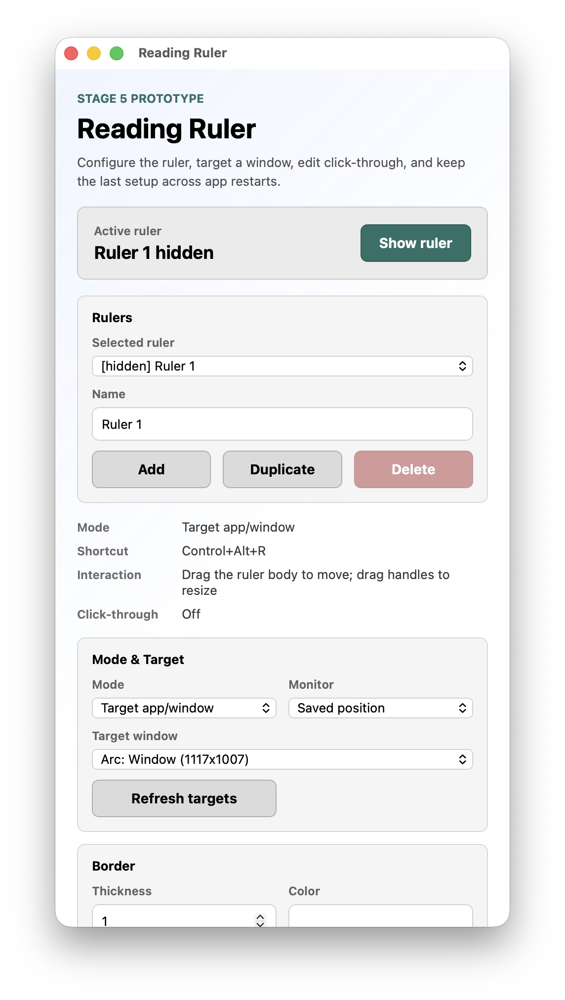
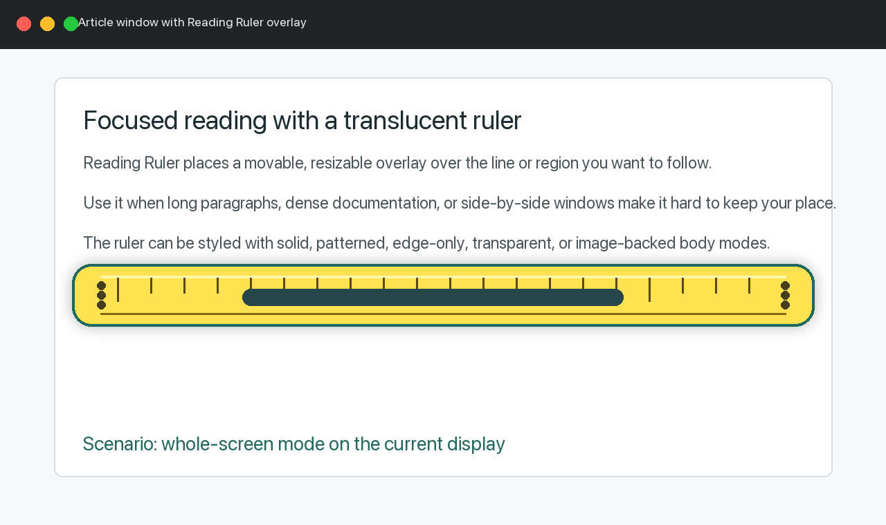
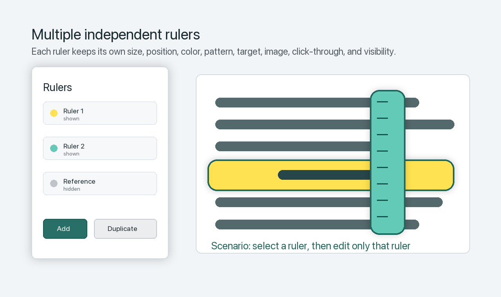

Rulers
Each ruler has its own name, visibility, size, position, style, target window, image background, click-through mode, and edit mode.
User Guide
Reading Ruler creates movable, resizable overlays that help you keep your place while reading dense text, documentation, browser pages, PDFs, spreadsheets, and side-by-side windows.
Use the control panel to select the active ruler, edit its settings, show or hide it, target an app window, import images, configure click-through, and save shortcuts.

Whole-screen mode keeps a ruler at a saved display position. Drag the ruler body to move it. Drag edges, corners, grips, or the center rail to resize it directly on screen.

Add or duplicate rulers when you need separate overlays for different areas, windows, monitors, colors, or reading tasks. The control panel edits only the active selected ruler.

Each ruler has its own name, visibility, size, position, style, target window, image background, click-through mode, and edit mode.
Targeted mode follows the exact selected window. If that window closes, minimizes, changes Space, or is not frontmost, the ruler hides until the target is available again.
Large dotted grips and the center rail inside the ruler are resize affordances. Left grips resize from the west edge; right grips and the rail resize from the east edge.
Choose solid, dotted, striped, grid, transparent, edge-only, or image-backed ruler bodies. Edge-only modes keep the middle clear.
Import an image file or paste an image from the clipboard. Reading Ruler copies the image into its config directory and restores it on restart.
Turn on click-through when you want mouse input to pass through the ruler. Turn edit mode back on before moving or resizing it.
The default shortcut is Control+Alt+R. It toggles only the active selected ruler.
Settings are saved in the user config directory and restored at launch. Reset restores defaults for the active ruler.